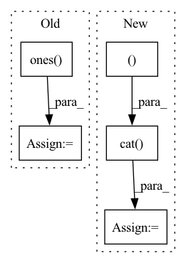

Pattern ID :31073

Before Change
def compute_alphas(self):
// Construct matrix for alpha calculation
objPts_w = np.array(self.objPts).transpose()[0]
mat_objPts_w = np.concatenate((objPts_w, np.array([np.ones((self.n))])), axis=0)
contPts_w = self.contPts_w.transpose()
mat_contPts_w = np.concatenate((contPts_w, np.array([np.ones((4))])), axis=0)
After Change
batch_size = objPts.shape[0]
num_pts = objPts.shape[1]
batched_ones = torch.ones((batch_size, num_pts, 1), dtype=objPts.dtype, device=objPts.device)
// concatenate object points with ones
objPts = torch.cat((objPts, batched_ones), dim=-1)
// concatenate control points with ones
batched_ones = torch.ones((batch_size, 4, 1), dtype=contPts_w.dtype, device=contPts_w.device)
contPts_w = torch.cat((contPts_w, batched_ones), dim=-1)
if linear_least_square:
NotImplementedError("Linear least square method is not implemented yet.")
// Calculate Alpha TODO: CHECK if logic is correct, or change to general method
alpha = torch.bmm(torch.linalg.inv(contPts_w), objPts) // simple method
alpha = alpha.transpose()
else:
alpha = torch.linalg.solve(contPts_w, objPts, left=False) // General method
In pattern: SUPERPATTERN
Frequency: 3
Non-data size: 5
Instances
Fragment ID: 91294833
Project Name: pypose/pypose
Commit Name: f6e65aa4066f56f1715c9ddfd89f5307c1ebe043
Time: 2023-02-24
Author: ztzhan1108@gmail.com
File Name: pypose/module/pnp.py
M Class Name: EPnP
N Class Name: EPnP
M Method Name: compute_alphas(4)
N Method Name: compute_alphas(1)
M Parent Class:
N Parent Class:
M File Name: pypose/module/pnp.py
N File Name: pypose/module/pnp.py
M Start Line: 127
M End Line: 140
N Start Line: 131
N End Line: 158
'>
Before Change
mask_value = max_neg_value(dots_text)
i, j = dots_text.shape[-2:]
mask = torch.ones(i, j, device = device).triu_(j - i + 1).bool()
dots_text.masked_fill(mask, mask_value)
attn_text = dots_text.softmax(dim = -1)
After Change
causal_mask = repeat(causal_mask, "i j -> b i j", b = bh)
mask = repeat(mask, "b j -> (b r) i j", r = (bh // b), i = i)
mask = torch.cat((~mask, causal_mask), dim = -1)
dots_image.masked_fill_(mask, mask_value)
// attention.
'>
Fragment ID: 91294834
Project Name: lucidrains/dalle-pytorch
Commit Name: c27f48c4373942167a0cc2ac2238f67af2479fe3
Time: 2021-02-14
Author: lucidrains@gmail.com
File Name: dalle_pytorch/attention.py
M Class Name: SparseAxialCausalAttention
N Class Name: SparseAxialCausalAttention
M Method Name: forward(3)
N Method Name: forward(3)
M Parent Class: nn.Module
N Parent Class: nn.Module
M File Name: dalle_pytorch/attention.py
N File Name: dalle_pytorch/attention.py
M Start Line: 191
M End Line: 241
N Start Line: 201
N End Line: 259
'>
Before Change
// print("gt shape:", gt.shape)
N, H, W = gt.shape
ord_c0 = torch.ones(N, self.ord_num, H, W).to(gt.device)
ord_label = torch.ones(N, self.ord_num*2, H, W).to(gt.device)
if self.discretization == "SID":
label = self.ord_num * torch.log(gt) / np.log(self.beta)
else:
After Change
// ord_label[:, 0::2, :, :] = ord_c0
// ord_label[:, 1::2, :, :] = ord_c1
// reimplementation for fast speed.
ord_label = torch.cat((ord_c0, ord_c1), dim=1)
return ord_label, mask
def __call__(self, prob, gt):
'>
Fragment ID: 91294825
Project Name: dontlovebugs/superviseddepthprediction
Commit Name: a29756ee2e089a313d149f6fa3ea441d955e42a0
Time: 2020-05-04
Author: wangxin_buaa@163.com
File Name: dp/modules/losses/ordinal_regression_loss.py
M Class Name: OrdinalRegressionLoss
N Class Name: OrdinalRegressionLoss
M Method Name: _create_ord_label(2)
N Method Name: _create_ord_label(2)
M Parent Class: object
N Parent Class: object
M File Name: dp/modules/losses/ordinal_regression_loss.py
N File Name: dp/modules/losses/ordinal_regression_loss.py
M Start Line: 27
M End Line: 41
N Start Line: 34
N End Line: 43